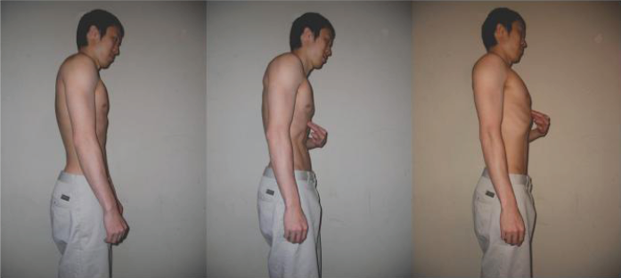
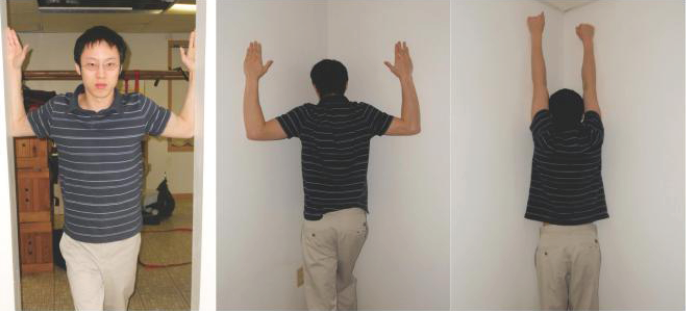
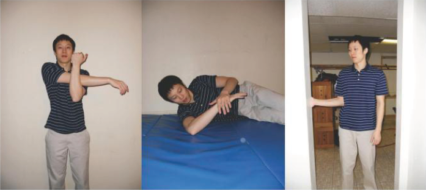

Общий дисбаланс
При подозрении на дисбаланс самое главное — определить его причины.
У большинства людей наблюдается дисбаланс в плечах из-за преобладания в спортзалах типовых
программ для пляжных
мышц (жим лежа и бицепс) в ущерб спине. Так же распространена
тренировка силы хвата без проработки разгибателей, что выливается потом в проблемы с
запястьем.
Осанка
До сих пор тема правильной осанки не поднималась. И только теперь позвольте обратиться к этому вопросу. Улучшать осанку — это то, что нужно делать всем. Как правило, упражнения для улучшения осанки заключаются в оттягивании плеч назад и втягивании шеи. Сами по себе упражнения хороши, но они бесполезны, если корсет еще не обучен приведению плеч в нужное положение. Вот поэтому я и не поднимал тему ранее.
Для улучшения осанки рекомендую следующее. Встаньте, как обычно. Не фокусируйтесь на
изменении положения плеч или шеи. Я не сторонник советов расправь плечи
или втяни
подбородок
для исправления верхнего перекрестного синдрома, при котором голова
выдвинута вперед, а плечи ссутулены.
Вместо этого сосредоточьтесь на нижней части грудины. Подтяните нижнюю часть грудины вверх
до тех пор, пока не почувствуете легкое растяжение брюшного пресса. В идеале пресс должен
напрячься процентов на 20-30 от своего максимума, если, конечно, мышцы не в состоянии
перенапряжения. Получится гордая осанка
или армейская выправка
. При этом
заплечье автоматически отведется назад, а шея вернется на место. Этот способ гораздо проще,
чем фокусирование на плечах и шее, к тому же он улучшает стабилизацию корпуса.

В действительности на последнем фото мои плечи даже слишком расправлены. Как видите, подъем
груди значительно облегчает поддержание правильной осанки. Когда вы подумаете об осанке,
вспомните мой совет — лучше всего работать от кора вверх
.
Это несложно — а хорошая осанка не требует усилий — следуйте этому совету ежедневно, и тело ответит благодарностью.
Упражнения и прочие рекомендации
Наконец, существует огромный список упражнений, советов по проработке подвижности и мягких тканей, которые можно использовать, чтобы вернуть себя в строй. Многое из этого было рассмотрено выше при обсуждении некоторых патологий, но кое-что стоит повторить здесь.
- Бросьте все жимовые движения.
- Выполняйте большое количество горизонтальных тяговых движений. Например, греблю, кроме вертикальной.
- Укрепляйте только внешние вращатели. Внутренние вращатели на время коррекционной работы исключите (грудь и широчайшие являются внутренними вращателями).
- Раскатывайте грудной отдел позвоночника массажным валиком, мячиком для лакросса или тенниса. Положите один или два 45-фунтовых блина на грудь, если требуется более глубокое воздействие. Вдохните и одновременно поднимите руки над головой.
- При появления воспаленности приложите лед.
- Выполняйте упражнение
выворот плеч
с резиновой лентой для увеличения диапазона движения (см. раздел Плечи). - Практикуйте в большом объеме массаж мышц от лопаток до передних отделов плеч с помощью теннисного мяча или чего-то подобного.
- Раскатывайте грудь баскетбольным мячом, особенно малую грудную мышцу. Если мячом получается не очень, массируйте руками.
- При необходимости используйте противовоспалительные средства, если они помогают.
- Выполняйте
скольжение нервов
(см. Радикулопатия рук. Отдающая боль). - Практикуйте глубокий массаж всей верхней части тела. Под
всем
я подразумеваю все, вплоть до предплечий. - LYTP для укрепления мускулатуры спины (см. раздел
Плечо
в главе 16 ). - Выполняйте растяжку задней капсулы, упражнение
растяжка спящего
, растяжку вращением наружу. - Выполняйте растяжку больших грудных мышц в углу с помощью рук, отведенных в сторону на 90° и согнутых в локтях. Для этого встаньте лицом к углу и коснитесь локтями примыкающих стен. Затем сделайте выпад вперед, растягивая передние мышцы плеч. Для растяжки широчайших мышц можно лечь боком на массажный валик или мячи.

